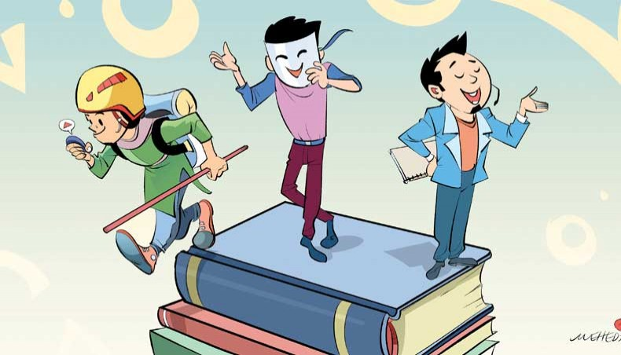
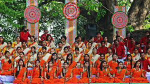

Extra Curriculum Activities

Educational curriculums are not sufficient to fulfil all the needs of young students. Extra-curricular activities bridge between the real world and curriculum, offering chances to students to shape skills like — poetry recitation, sports, debate, art and organising.Extra-curricular activities are set of different activities that reside outside regular educational curriculum of any given institute. These activities exist in all levels of educational institutes and they are usually voluntary and performed by students. In order to offer the young students a robust chance of personality development, alongside the classroom curriculum, these are spaces to engage students to complement their studies through extra-curricular activities. Such activities offer students a wide range of benefits helping them in — social, cultural, cognitive, emotional, moral and aesthetics — development. This is to be considered that such activities transform with time. For example, a young person who went to university during the 1990s has a completely different idea of these activities than today’s youth. In MM College Besides annual cultural program and prize giving ceremony, important days and occasions are celebrated. In addition, a week-long cultural competition and various game events are held as per schedule. Picnic for students of all levels is held in different groups. Students from this college take part in different cultural and game competitions organized by government and non-government organizations at regional and national levels.Every year on scheduled dates, a picnic of HSC 1st year and Honours classes are held along with the excursion of some HSC class. Even, every year the cultural week is held to find out the latent talent among the students on different Co-curricular activities. Year cultural Program is also held where the students of this college participate to make the event colorful. In MM College students can participate in different co-curricular activities which helds every year.These Co-curricular activities are mentioned below :
1.Quizing Students Participate in various competition. MM College is the champion of Inter college Quiz Competition 2017 & 2018.2.Debating Debating society, conduct regular debate competition. This college's debating team is the current runner-up of Inter college parliamentary Debate Competition 2018.Students Participate in debates organized by Bangladesh Television, National Debate Council, Youth Development Directorate & Family planning Society and district administration on various occasions.
3.Sports and Games Every year different indoor and outdoor games are held around the year.
i.Outdoor Games : 1.Football, 2.Cricket 3.Basketball, 4.Volleyball
ii.Indoor Games : 1.Table tennis, 2.Badminton, 3.Karom Board.4.Bangladesh Udichi Shilpigosthi: Bangladesh Udichi Shilpigosthi, the largest anti-communal, progressive and voluntary organization of Bangladesh, plays a significant role in the democratic and cultural movements of Bangladesh. The organisation works to create a favourable environment for the true development of national culture in the spirit of liberation in Bangladesh. In MM College we have the organization Udichi Shilpigosthi,which gathared students who are interested in cultural activities.Every year Udichi Shilpigosthi arrange a cultural program,which helds in the college campus.In this program many students perform in diferent cultural activities.Such as stage drama, dance and other cultural programmes.
